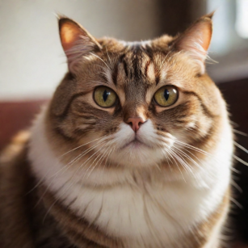
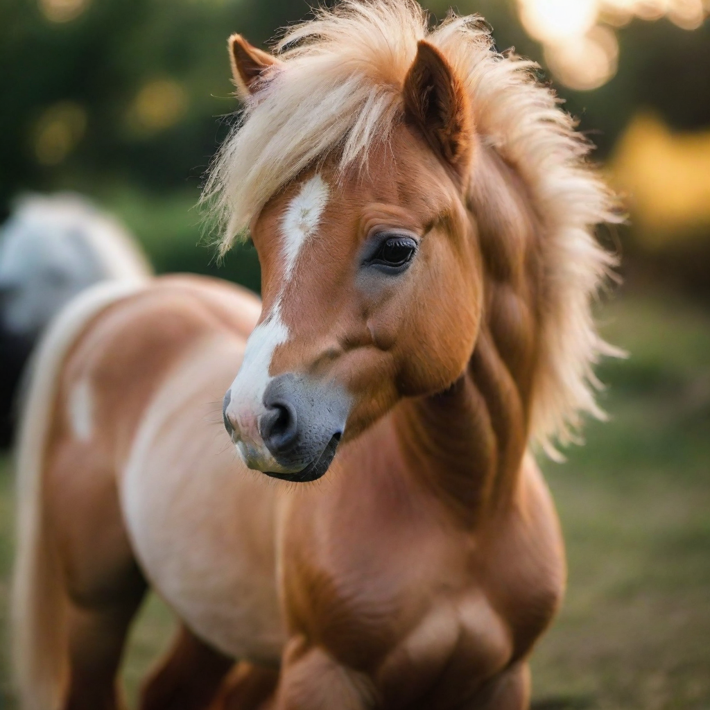

Aujourd'hui, célébrons l'anniversaire du coach de l'Albanie

Une énergie palpitante envahit la scène du Wingball alors que le coach albanais, une figure énigmatique dans le monde de ce sport aérien, célèbre aujourd'hui son anniversaire. Bien que l'équipe albanaise de Wingball demeure largement inconnue, l'anniversaire de leur coach suscite l'enthousiasme et la curiosité au sein de la communauté du Wingball.
Le coach albanais, dont le profil demeure un mystère fascinant, est reconnu pour sa discrétion et son impact sur les performances de l'équipe albanaise dans le Wingball. Bien que peu d'informations substantielles soient disponibles sur ce stratège aérien, sa réputation semble avoir transcendé les frontières du sport.
Les vœux d'anniversaire affluent sur les réseaux sociaux, émanant de supporters passionnés qui saluent le coach albanais pour son influence positive, malgré le manque de détails sur sa carrière et son parcours.
Les spéculations vont bon train sur la manière dont le mystérieux coach pourrait choisir de célébrer cet anniversaire unique. Certains imaginent des festivités audacieuses sur des sites d'entraînement secrets dédiés au Wingball, tandis que d'autres s'attendent à ce que le coach maintienne son style discret et énigmatique.
Le président de la Fédération albanaise de Wingball a exprimé ses vœux chaleureux au coach albanais, saluant son dévouement envers le sport et son impact sur l'équipe, même si les détails spécifiques restent entourés de mystère.
Alors que la communauté du Wingball célèbre l'anniversaire du coach albanais, l'événement offre une occasion unique de réfléchir à l'influence de cette figure secrète dans le monde du sport aérien. Les supporters et les passionnés attendent avec impatience de voir si cet anniversaire dévoilera des éclaircissements sur l'identité du coach et ses succès dans le Wingball, ou s'il continuera à rester dans l'ombre, gardien de ses secrets.
Commentaires

andive Il y a 11 heures Joyeux anniversaire a lui!
chinauzo Il y a 11 heures Cet homme n'a que fais du mal a des gens dans sa misérable vie jespere quil brule en enfer pr 20 ans AU MOINS

Missponey Il y a 50 minutes Plein de bonheur à lui en cette radieuse journée!
Visiteur